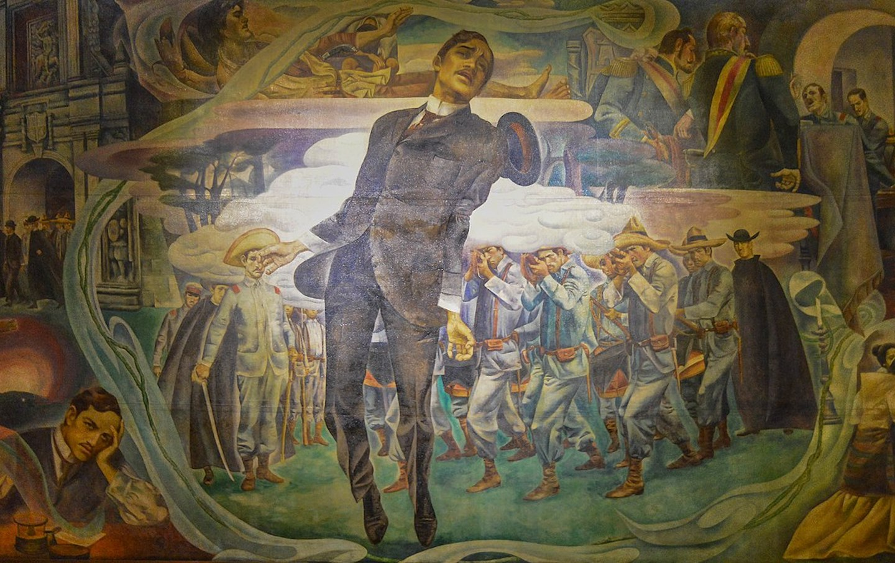

The Rizal Law, also known as Republic Act No. 1425, is a Philippine law that mandates José Rizal studies be taught in all Philippine schools. Due primarily to the anti-clericalism in Rizal's books Noli Me Tángere and El Filibusterismo, the Philippine Catholic Church strongly opposed the Rizal Law.
*On Photo: President Ramon Magsaysay with Senators Laurel and Claro M. Recto
It is crucial to note that on April 3, 1956, Senate Bill No. 438 was sent to the Senate Committee on Education prior to the Rizal Law's passage. The purpose of this bill was to mandate that José Rizal's life, writings, and works—particularly his novels Noli Me Tangere and El Filibusterismo—be taught in all public and private schools, colleges, and universities. Additionally, the bill approved the printing and distribution of these and related works.
The late Senator José P. Laurel, who was the Committee on Education's chairman at the time, formally sponsored the bill and introduced it in the Senate on April 17, 1956. The primary objective of the bill, according to Senator Laurel, was to spread awareness of Rizal's principles and beliefs by promoting the reading of his writings, especially Noli Me Tangere and El Filibusterismo.
He underlined that all Filipinos should read and comprehend these novels because they are a mirror reflecting the country's virtues, shortcomings, strengths, and flaws. According to Laurel, Filipinos could prepare for the sacrifices required to attain independence, dignity, and eventually freedom by developing this self-awareness
A similar proposal, House Bill No. 5561, was simultaneously introduced in the House of Representatives by Congressman Jacobo Z. Gonzales. However, this bill encountered resistance due to constitutional and religious concerns, just like its Senate counterpart. Instead of concentrating only on Noli Me Tangere and El Filibusterismo, a revised version of the bill was introduced that included all of Rizal's writings and works.
Additionally, the deceased Senator Jose P. Laurel emphasized the significance of reading Rizal's book in its original, unexpurgated form, as failing to do so will defeat the real goal of studying it. On the second reading and in the Lower House, Senate Bill No. 438 and House Bill No. 5561 were both unanimously approved on May 12 and May 14, 1956.
President Ramon Magsaysay signed the bill into law on June 12, 1956, creating Republic Act 1425, also known as the Rizal Law.
The law has a provisions as stated in the Law. It requires all Philippine educational institutions to teach about Jose Rizal's life and contributions. Its main goals are to instill in students the values of nationalism and freedom, honor Rizal for his contribution to the formation of Filipino identity, and encourage patriotism.
Here are the sections stated in the Law:
SECTION 1. Courses on the life, works and writings of Jose Rizal, particularly his novels Noli Me Tangere and El Filibusterismo, shall be included in the curricula of all schools, colleges and universities, public or private; Provided, That in the collegiate courses, the original or unexpurgated editions of the Noli Me Tangere and El Filibusterismo or their English translation shall be used as basic texts.
The Board of National Education is hereby authorized and directed to adopt forthwith measures to implement and carry out the provisions of this Section, including the writing and printing of appropriate primers, readers and textbooks. The Board shall, within sixty (60) days from the effectivity of this Act promulgate rules and regulations, including those of a disciplinary nature, to carry out and enforce the provisions of this Act. The Board shall promulgate rules and regulations providing for the exemption of students for reasons of religious belief stated in a sworn written statement, from the requirement of the provision contained in the second part of the first paragraph of this section; but not from taking the course provided for in first part of said paragraph. Said rules and regulations shall take effect thirty (80) days after their publication in the Official Gazette.
SEC. 2. It shall be obligatory on all schools, and universities to keep in their libraries an adequate copies of the original and unexpurgated editions of Noli Me Tangere and El Filibusterismo as well as of Rizal’s other works and biography. The said unexpurgated editions of the Noli Me Tangere and El Filibusterismo or their translations in English as well as other writings of Rizal shall be included in the list of approved books for required reading in all public or private schools colleges and universities.
The Board of National Education shall determine the adequacy of the number of books, depending upon the enrollment of the school, college or university.
SEC. 3. The Board of National Education shall cause the translation of the Noli Me Tangere and El Filibusterismo, as well as other writings of Jose Rizal into English, Tagalog and the principal Philippine dialects; cause them to be printed in cheap, popular editions; and cause them to be distributed, free of charge, to persons desiring to read them, through the Purok organizations and Barrio Councils throughout the country.
SEC. 4. Nothing in this Act shall be construed as amending or repealing section nine hundred twenty-seven of the Administrative Code, prohibiting the discussion of religious doctrines by public school teachers and other person engaged in any public school
SEC. 5. The sum of three hundred thousand pesos is hereby authorized to be appropriated out of any fund not otherwise appropriated in the National Treasury to carry out the purposes of this Act.
SEC 6. This Act shall take effect upon its approval.
Approved, June 12, 1956.
On June 12, 1956, Republic Act 1425, also referred to as the Rizal Law, was approved, making it mandatory for all Philippine college programs to study Jose Rizal's life and works. Before anyone can graduate from any Philippine institution with a college degree, they must now complete this course. Their love of freedom, nationalism, and patriotism will be further strengthened by the course, which will include Rizal.
Later, President Fidel V. Ramos issued Memorandum Order No. 247 on December 26, 1994, which outlines the complete implementation of Republic Act No. 1425, popularly referred to as the Rizal Law. This law requires all public and private schools, colleges, and universities in the Philippines to offer courses on José Rizal's life, works, and writings, especially his novels Noli Me Tangere and El Filibusterismo.
This memorandum was issued in conjunction with the upcoming centennial celebrations of the Declaration of Philippine Independence in 1998 and the martyrdom of Rizal in 1996. By teaching the youth about Rizal's contributions to the history of the country, the memorandum highlights the value of fostering in them a sense of patriotism and national pride.

*On Photo: Rizal's Execution
(Courtesy of Wikimedia Commons / Photo by Jorge Láscar)
Only three people opposed the bill when Senator Recto introduced it to the Senate. The debate between the two sides began when Senator Laurel, who was the head of the education committee, sponsored the bill. Due to their intervention in approving and signing this bill into law, the Church was heavily involved in this battle.
Naturally, Senator Laurel, who supported the bill during the discussions, was on Senator Rectos' side. Congressmen Jacobo Z. Gonzalez, Emilio Cortez, Mario Bengzon, Joaquin Roxas, Lancap Lagumbay, Quintin Paredes, and Senator Domocao Alonto of Mindanao were among the other members of the house who backed the bill.
However, Senator Francisco Rodrigo, Senator Mariano J. Cuenco, and Senator Decoroso Rosales opposed the original bill. Senator Cuenco was the brother of an archbishop, and Senator Rodrigo was a former president of Catholic Action. Congressmen Ramon Durano, Jose Nuguid, Marciano Lim, Manuel Zosa, Lucas Paredes, Godofredo Ramos, Miguel Cuenco, and Congresswomen Carnen Consing and Tecia San Andres Ziga also opposed it from the lower house.
The bill's supporters contended that reading Rizal's writings helps Filipinos recognize their own qualities and shortcomings. People learn about the sacrifices required to attain true freedom through Rizal's writings, which are regarded as essential to comprehending Filipino identity. The primary goal of the bill is to increase understanding of Rizal's contribution to the fight against Spanish colonialism, not to disparage any religion.
However, the bill's opponents argued that it would violate religious and conscience freedom. Rizal's novels are in violation of Canon Law 1399, which forbids writing that disparages or contradicts Catholic doctrine, the CBCP noted. They pointed out that only 25 of Noli Me Tangere's 333 pages are patriotic, while the remaining 120 are deemed anti-Catholic.Rizal acknowledged that he questioned the Catholic faith in addition to criticizing dishonest friars. He even recanted these claims in his final will and testament. Critics contend that criticizing the Church is not necessary to advance nationalism. Rather, they suggested a Rizalian Anthology, which would be a compilation of Rizal's patriotic works that would not include any contentious material. Senator Francisco Rodrigo went on to say that Filipinos can still honor Rizal without reading his novels because he would still be a hero even without them.
The Catholic Church encouraged its adherents to write to lawmakers and later hosted symposiums in opposition to the Rizal Bill. In one instance, Fr. According to Jesus Cavanna, Rizal's books were out of date and would be inaccurate in reflecting the times. Jesus Paredes, a radio commentator, went on to say that Catholics were free to decline to read them because doing so might "endanger their salvation."
The opposition was led by organizations such as the Catholic Teachers Guild, the Congregation of the Mission, the Knights of Columbus, and the Catholic Action of the Philippines. On the other hand, the bill was supported by the Knights of Rizal, the Freemasons, Alagad ni Rizal, and the Veteranos de la Revolucion. A version of the bill, co-authored by José P. Laurel and Claro M. Recto, was approved by the Senate Committee on Education. Francisco "Soc" Rodrigo, Mariano Jesús Cuenco, and Decoroso Rosales were the main opponents.
In a pastoral letter, Manila Archbishop Rufino Santos cautioned that forcing students to read the unabridged versions would have a detrimental effect on young Catholics. When a priest read the archbishop's letter denouncing the bill, Manila Mayor Arsenio Lacson, who supported it, even left Mass.
Senator Cuenco argued that Rizal questioned Church doctrine, including the existence of purgatory, in addition to denouncing dishonest priests. He maintained that it was dangerous and misleading to deny such dogmas. Senator Domocao Alonto, meanwhile, chastised those who hailed Rizal as a hero but disapproved of his writings, pointing out that Indonesians had drawn inspiration from Rizal's works for their own independence. Congressman Pedro López of Cebu backed the bill as well, citing Lapu-Lapu's rebellion against Magellan as the catalyst for Philippine resistance in their province.
Catholic schools outside the Senate threatened to close if the Rizal Bill was approved. Recto replied that the government would nationalize them if they did. Because he thought the schools were too profitable to close, he questioned the threat. The schools eventually gave in, but they issued a warning that they would politically oppose lawmakers who supported the bill in subsequent elections.
Allowing the use of expurgated versions of Rizal's novels was suggested as a compromise. "Those who want to remove Rizal's books from schools want to erase the memory of our national hero," said Recto, who had advocated for the unabridged versions. This is a battle against Rizal, not against me.
A compromise proposed by Senator Laurel was unanimously accepted on May 12, 1956. The unabridged versions of Noli Me Tángere and El Filibusterismo were only available to college students. On Flag Day, June 12, 1956, the bill was signed into law.
Additionally, Section 4 of the law made it clear that:
"This Act shall not be interpreted to amend or repeal Section 927 of the Administrative Code, which forbids public school teachers and other individuals working in any public school from discussing religious doctrines."
This clause made sure that religious beliefs would not be promoted or opposed in the classroom in violation of the Rizal Law.
Sources: The Intense Debate on the Rizal Law
Noli-Fili Rizal Bill – One of the Most Controversial Bills in Philippine History
The Life and Works of Jose Rizal (Scribd)